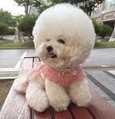
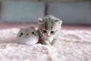
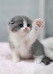

This is a picture a fluffy Korean poodle. It is wearing a cute strawberry collar and has very fluffy fur. This poodle looks like a stuffed animal because of its fluffy fur.
This is another picture of a Korean poodle. It is also fluffy. This poodle is wearing a pink dress and it is smiling. It is sitting on a bench and sticking its tongue out.
This is a picture of a very cute gray kitty. This kitty is sitting next to a small white stuffed cat on a baby pink blanket. The kitty and the stuffed cat are both almost the same size and they look very adorable.
This is a picture of a very adorable kitty with pink paws, a white belly, and gray fur. This kitty is reaching out its paw and sitting on a blanket. The kitty's eyes are very shiny and big.
This is a picture of a brown Korean poodle. It looks like a little sheep and it is very adorable. This brown poodle has very curly and fluffy fur.